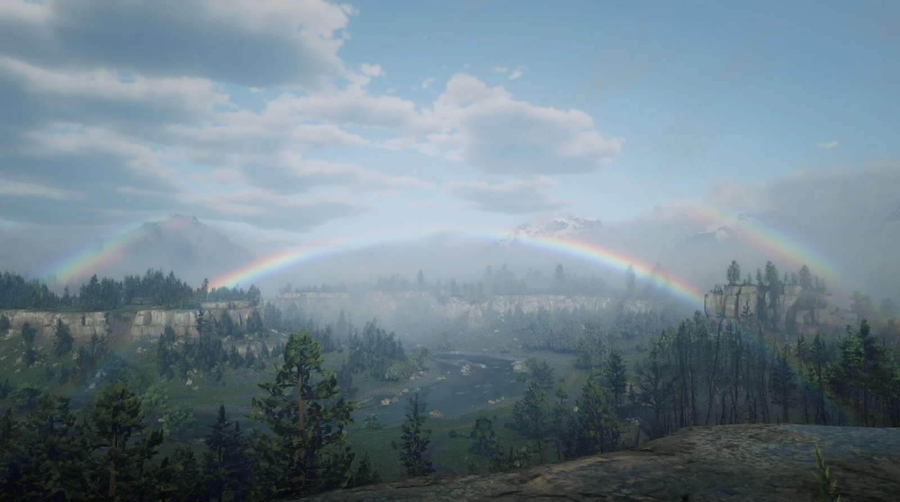
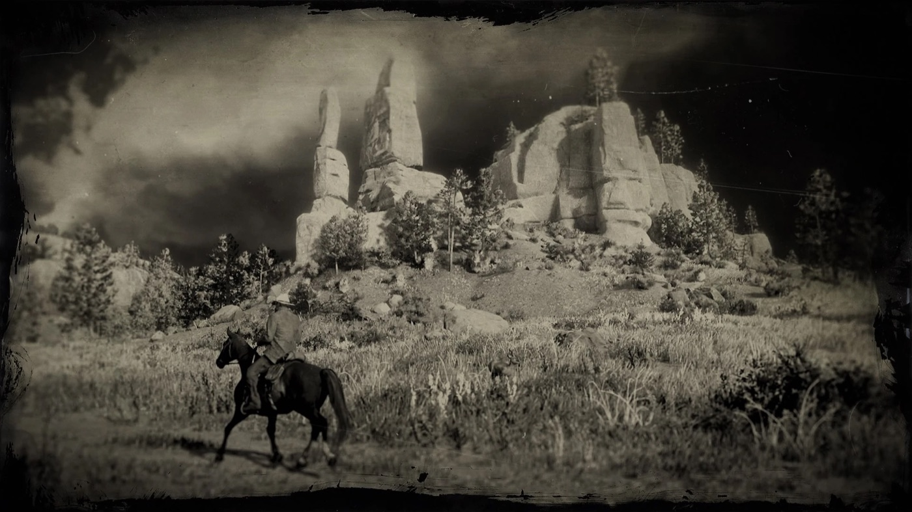
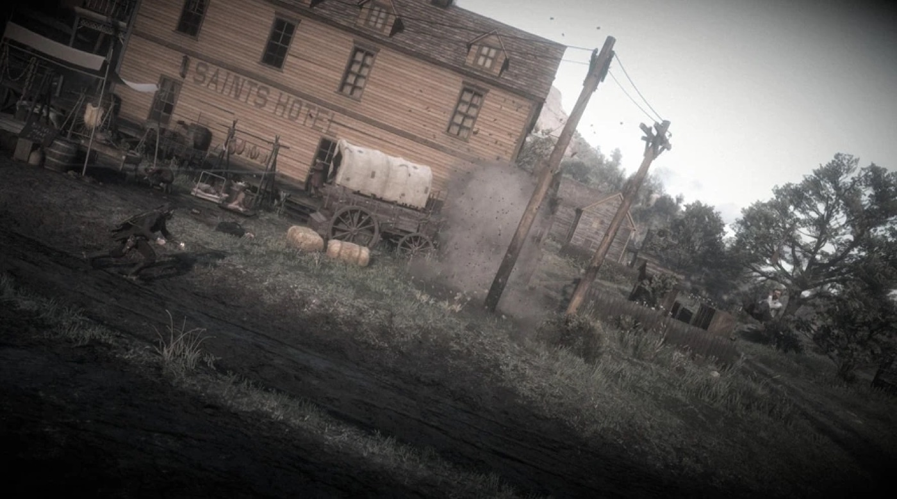

Guide de l'histoire · Red Dead Redemption 2 Chapitre 2 : Horseshoe Overlook Red Dead Redemption 2 Chapitre 2 sur 6 Horseshoe Overlook, New Hanover 1899 Par Joseph Lambert · Mis à jour le 24 juin 2026  Horseshoe Overlook, le camp du gang au-dessus de la Dakota River, dans les Heartlands de New Hanover. Si le Chapitre 1 était le prologue glacé, le Chapitre 2 est celui où Red Dead Redemption 2 commence vraiment. Le gang descend des montagnes et s'installe à Horseshoe Overlook, dans les Heartlands vallonnés de New Hanover, et le jeu vous livre enfin le monde ouvert : chasse, villes, inconnus, braquages. C'est aussi, discrètement, le chapitre qui enclenche toute la tragédie. Spoilers complets sur le Chapitre 2 de Red Dead Redemption 2. Le décor : le monde s'ouvre Horseshoe Overlook surplombe la Dakota River, à courte distance de la ville bovine et boueuse de Valentine. Après le couloir linéaire de Colter, c'est le chapitre qui laisse respirer : le camp grouille de vie, l'argent et les provisions se mettent à compter, et pour la première fois on peut simplement vagabonder. Dutch prêche la patience et un dernier gros coup ; le gang, pour l'instant, y croit presque.  Les Heartlands : la grande plaine qui s'ouvre au Chapitre 2. Valentine, la ville boueuse du gang Valentine est le cœur du chapitre. Dans « Polite Society, Valentine Style », Arthur, Hosea et Uncle repèrent la ville et ses opportunités. Tout déborde dans « Americans at Rest », la bagarre de saloon homérique qui laisse Arthur jusqu'aux genoux dans la boue et les corps, l'un des morceaux de bravoure les plus mémorables du jeu et une parfaite déclaration de l'arrogance du gang.  La bagarre du saloon de Valentine dans « Americans at Rest ». Les dettes de Strauss, et la raclée qui a condamné Arthur Le prêteur du gang, Leopold Strauss, confie à Arthur une liste de débiteurs dans « Money Lending and Other Sins ». La plupart sont de simples intimidations, mais pas une : Arthur s'en prend à un fermier malade et ruiné, Thomas Downes, qui lui crache du sang dessus pendant la bagarre. Sur le moment, ça paraît anodin. C'est en réalité le moment le plus important du jeu : la graine de la tuberculose qui scellera le destin d'Arthur Morgan. L'évasion de Micah à Strawberry Dans « Blessed are the Meek? », Arthur file à la ville de Strawberry pour faire évader Micah Bell de prison, en canardant la moitié de la ville au passage. Une faveur qui ne rapporte au gang que des ennuis, et resserre l'emprise de Micah sur Dutch, exactement l'influence contre laquelle Hosea met en garde. La vendetta Cornwall s'aggrave Les missions « Pouring Forth Oil » frappent à nouveau Leviticus Cornwall, cette fois ses intérêts pétroliers, en faisant sauter les affaires de l'industriel et en approfondissant la vendetta née quand le gang a braqué son train au Chapitre 1. L'argent de Cornwall achète des Pinkerton, et l'étau commence à se resserrer. Une soirée tranquille, et de vieilles connaissances Tout n'est pas que coups de feu. « A Quiet Time », c'est la soirée d'ivresse culte qu'Arthur partage avec Lenny Summers au saloon de Valentine : une pause éméchée et hilarante qui montre le gang sous son jour le plus chaleureux. Le jeune Irlandais Sean MacGuire est sauvé des chasseurs de primes et fêté à son retour, et l'ancien amour d'Arthur, Mary Linton, réapparaît pour lui demander de l'aide avec sa famille dans « We Loved Once and True ». Les Pinkerton se rapprochent Le ton s'assombrit quand les agents Andrew Milton et Edgar Ross font leur premier coup, coinçant Arthur pour bien lui faire comprendre que la loi sait exactement qui est le gang Van der Linde. Valentine devenant trop chaude, le gang doit plier bagage une fois de plus (« Exit Pursued by a Bruised Ego ») et filer vers le sud, en Lemoyne, ce qui clôt le Chapitre 2 et installe le camp de Clemens Point. Personnages clés Le Chapitre 2 étoffe la famille : Arthur en homme de confiance du gang (et désormais condamné), Dutch et Hosea en tête et conscience, et Micah qui s'incruste davantage. John Marston, Charles Smith, Bill Williamson et Sadie Adler participent tous à la vie du camp, aux côtés de Strauss, Lenny, Sean de retour, et Mary Linton. Pourquoi Horseshoe Overlook compte C'est le chapitre qui vous fait aimer le gang, et celui qui condamne discrètement son héros. Le monde s'ouvre, le camp devient un foyer, les coups paient, et on se met à croire aux promesses de Dutch. Et lors d'un simple recouvrement de dette crasseux, avec une toux qu'on remarque à peine, le jeu plante la maladie qui emportera Arthur. Tout ce qu'il y a de chaleureux dans le Chapitre 2 est précisément ce qui rendra la suite si douloureuse. PrécédentChapitre 1 : Colter Guide de l'histoireTous les chapitres